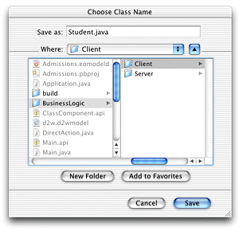
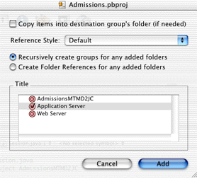
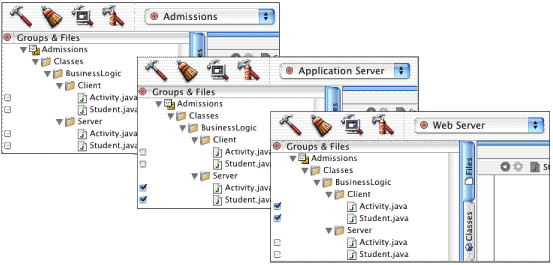

EOModeler can generate Java files for your model. You'll use these source files to add custom business logic to your enterprise objects.
| Note: In WebObjects 5.1 with certain versions of Mac OS X and the developer tools, EOModeler does not prompt you for a location for the class files it generates. Rather, it attempts to save files in the model's directory. To work around this bug, you'll have to manually move the generated class files to the correct directories. |
Follow these steps to generate Java files for the client:
Figure 5-9 Save Client Java files in BusinessLogic/Client
Follow these steps to generate Java files for the server:
The Java class files generated by EOModeler include the necessary import declarations as well as constructors and accessor methods derived from the properties of the entity defined in the model file.
Although you told EOModeler where to put the generated files, Project Builder did not automatically add them to the project.
Follow these steps to import the generated files into Project Builder:
BusinessLogic directory
and click Open. This creates a new group and imports the BusinessLogic
directory and its subdirectories into the group.Figure 5-10 Import BusinessLogic directory
Make sure that Admissions is the target selected in the targets pop-up menu after you've correctly associated the imported files with their targets.
Figure 5-11 BusinessLogic group with imported files and associated targets
Now the project uses custom classes for the Student and Activity enterprise objects instead of EOGenericRecord. These class files can be edited to implement custom behavior.
If you examine the code in any of the imported classes, you'll notice that the class generated by EOModeler does not have actual instance variables or fields. Rather, the methods to access the attributes of the custom enterprise objects are implemented using key-value coding.
Step 6: As an alternative to importing all the custom Java classes at once and then changing the target accordingly, you can also import the server and client classes separately and assign them to the appropriate target at that time.